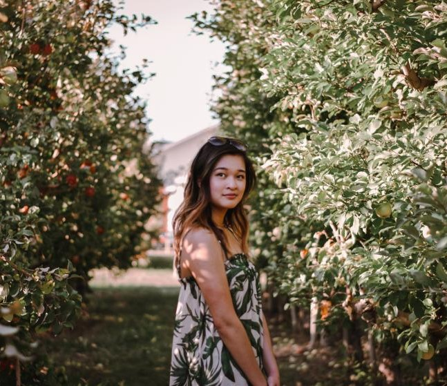
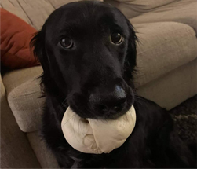

LINH DINH

"Hello, I'm Linh."
Background
I am currently in my third year as a graphic design major here at MSU. I live in Mankato with my parents and two younger sisters, and we’ve lived in this same city our whole lives which is still pretty crazy to me. After I graduate, I hope to move to Minneapolis and possibly somewhere out of state eventually--wherever my career might take me.
I was introduced to graphic design when I was really young, probably around 8 or 9. I spent a lot of time sitting behind a computer playing games and I was inspired by the art that I was seeing for these games. I was pretty computer savvy for a kid my age, and that led to my experimenting with a bunch of strange bootleg photoshop programs. It wasn’t until later in my highschool years that I discovered graphic design was a real career that people pursued.
Hobbies
Outside of school and graphic design, I love spending time on my other hobbies. Lately, I've been experimenting with digital drawing and painting with acrylics, watercolor, and pastels.
I also love listening to music and have been playing violin since middle school. During quarantine, I picked up a love for cooking and trying new foods. A few of my favorites so far that I've made are tres leches or tiramisu. Although I'm still an amateur, I also love to sew new clothing pieces and embroider patches for myself and to use on gifts for people. When I have time, I also really enjoy playing games with my friends. After years of using a laptop, I finally upgraded and built my first computer setup that I'm really happy with!
Work
Currently, I work as a student graphic designer for MSU. I count myself very fortunate for the fact that my education and outside hobbies both serve as inspiration for the other. Although I spend a lot of time being creative, I don’t usually feel burnt out because of how different each of my projects are. From music to embroidery, cooking, painting, or sewing, I always like finding something new to keep myself busy and inspired.
Contact
You can see some of my work
here on my behance. Lastly, enjoy this picture of the best dog ever!
